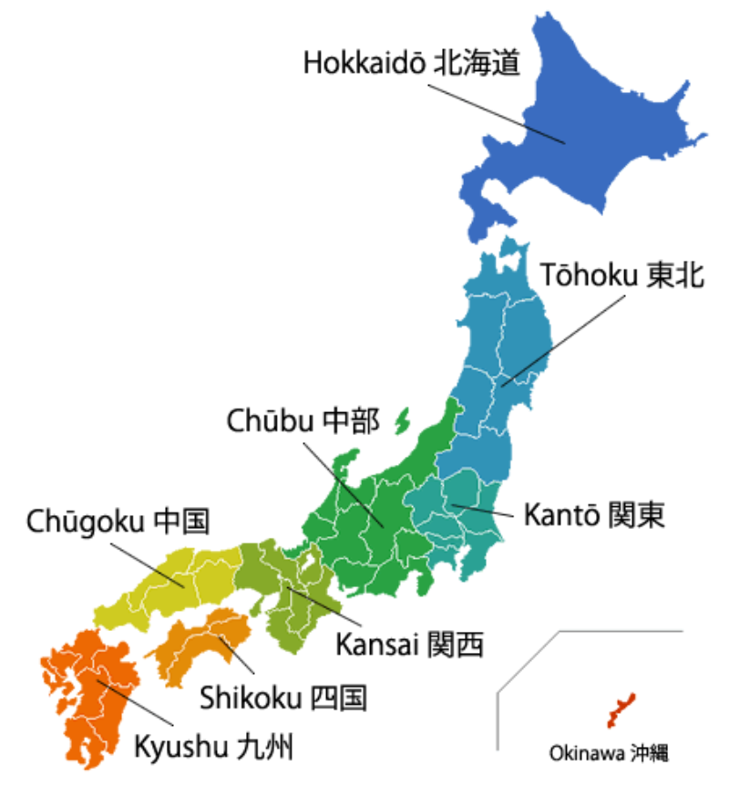

❥ Regiunile în Japonia nu sunt unități administrative oficiale, dar au fost totuși folosite tradițional drept diviziuni teritoriale ale Japoniei în diferite contexte. Japonia are 8 curți superioare de justiție, dar ele nu corespund celor 8 regiuni.
De la nord la sud regiunile sunt:

✿ HokkaidŠ-insula HokkaidŠși insulițe alăturate, cel mai mare oraș fiind Sapporo
✿ Tōhoku -nordul insulei Honshū, cel mai mare oraș fiind Sendai
✿ KantŠ-estul insulei Honshū, cele mai mari orașe fiind Tokyo și Yokohama
✿ Chūbu -partea centrală a insulei Honshū, include Muntele Fuji, uneori împărțită în:
-Hokuriku -partea de nord-vest al regiunii Chūbu
-Kōshin'etsu -partea de nord-est al regiunii Chūbu, cel mai mare oraș fiind Nagano
-Tōkai -partea de sud al regiunii Chūbu, cele mai mari orașe fiind Hamamatsu și Shizuoka
-ChūkyŠ-partea de sud-vest al regiunii Chūbu, cele mai mari orașe fiind Nagoya, Gifu și Yokkaichi
✿ Kansai sau regiunea Kinki -parțile de vest și centrală ale insulei Honshū, orașe principale fiind Osaka, Kobe și Kyoto
✿ Chūgoku-partea de vest a insulei Honshū, orașe principale fiind Hiroshima și Okayama
✿ Shikoku -orașe principale Matsuyama și Takamatsu
✿ Kyūshū -oraș principal Fukuoka care include:
✿ Insulele Ryukyu, incluzând Okinawa
Fiecare din aceste regiuni conține mai multe prefecturi, cu excepția regiunii Hokkaidō, care coincide cu prefectura.